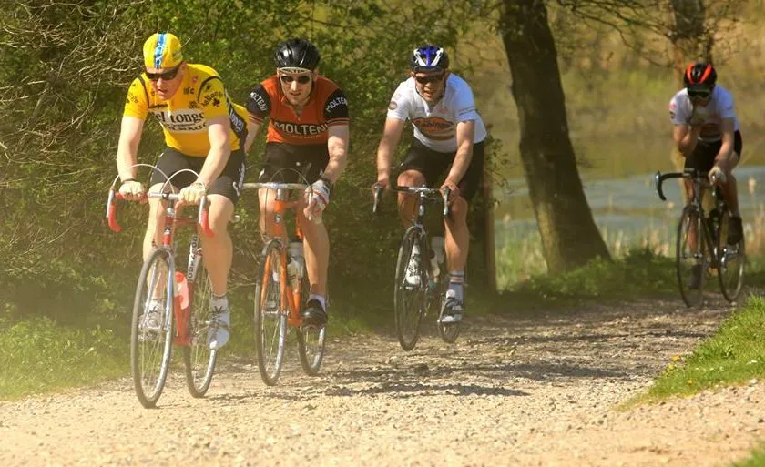

Optakt: Le Grand Prix Vejle de Ådal 2022

Grand Prix Vejle Ådal (GVPÅ) køres for 8. gang på lørdag. Squadra Molteni stiller til start med top-trimmet 8-mandshold – og går som altid efter sejren.
Og som det altid er med GVPÅ, så er intet som det har været. I år har løbet fået nyt navn. I anledningen af den danske tourstart har GVPÅ sat et “Le” og “de” ind i det oprindelige navn. Grand Prix Vejle Ådal er blevet til Le Grand Prix Vejle de Ådal. Og endnu engang med ny rute – ja, faktisk et helt nyt koncept: Le Grand Prix Vejle de Ådal er i år et etapeløb på 2 etaper – på samme dag. En prolog på 7 km, og en 1. etape på 52 km.
Vi skal lige have nærlæst proportionerne for konceptet. Hvad går løbet ud på i år? Hvordan er ruten? Er ruten afmærket? Der er jo altid en vis usikkerhed i at køre GVPÅ, så vi kører rekognoscering det meste af ugen, fortæller Kaptajn Bjørnsteen.

Squadra Molteni stiller til start med Kaptajn Bjørnsteen, Løjtnant Kasper Sørensen, Lars Munch, Grane Maaløe, Jens Stærk, Carsten Jacobsen, Claus Bech og Maria Winther, der er løbsklar efter endt barsel.
Enkeltstarten giver sig selv: Det er à bloc hele vejen. Grane Maaløe har sat alle
cykler op til enkelstart: Fedt i nav og krank er skiftet ud med tynd symaskineolie, og 1-2 kugler er pillet ud, fortæller Kasper Sørensen.Vi har også hørt noget om, at det på 1. etape skal være bakkespurt 2 steder. Det er dog ikke officielt meldt ud hvilke bakker, der skal køres bakkespurt på. Så vi har sat Kaptajnen på dén opgave.


Squadra Molteni kører som altid efter sejren. Holdet regner med at Kaptajn Bjørnsteen og Løjtnant Kasper Sørensen vil kører sig på podiet i enkeltstarten. På første etape vil Lars Munch og Carsten Jacobsen få en afgørende rolle, lyder det fra Molteni HQ.